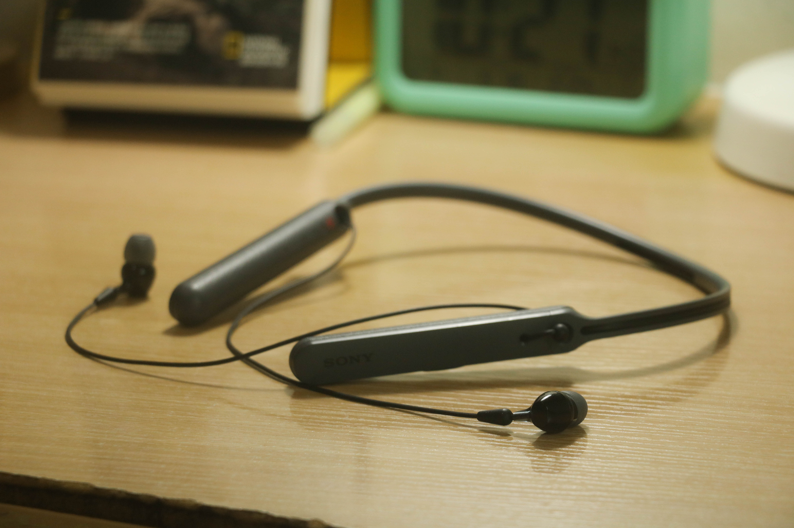
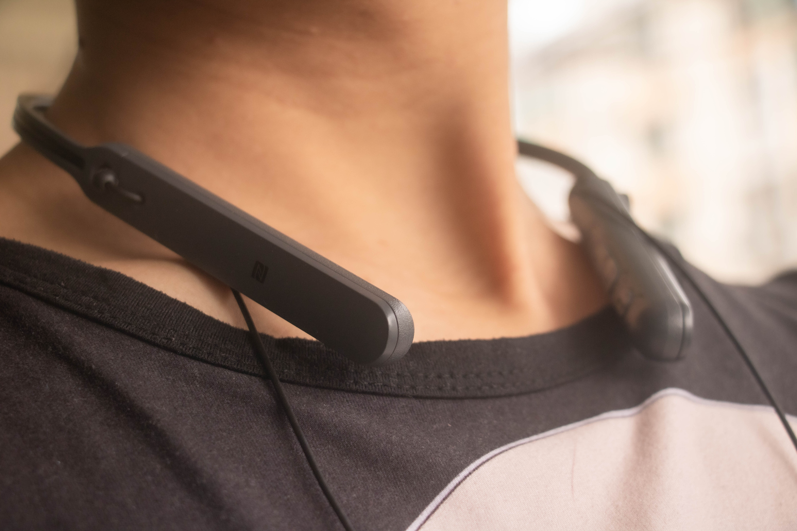

大法家的Bargain————WI-C400评测
前言/Preface
大约是去年年初的时候，我购入了这款索尼的WI-C400项圈式蓝牙耳机，当时我新换上了Sony XZ1，就突然想要一款蓝牙耳机来解决有线耳机冗杂且令人烦恼的打结问题。但也因为囊中羞涩，没法购买1k+ CNY的耳机。突然想到大法家的耳机支持NFC快速配对，经过多次价格比较之后，这款廉价的项圈式耳机就被我抱回家了。
想写这篇评测的时候内心其实没有什么感觉，只是突然想敷衍出一片博客文而已吧。

关键词/Keyword
- 蓝牙4.2协议
- USB-Micro接口
- 20HRS续航时间
- 项圈式硬质耳机
- 没有降噪
- 价格：499￥
Review
音质 Quality
说实话，如果听说过“万元以下听个响”的朋友应该明白，五百元能买到的项圈式蓝牙耳机的音质和买手机送的耳机音质没有太多差别。而事实也的确如此，可能更容易推动吧，经常耳机已经是最小音量了却仍然感到声音过大。大法家的三频均衡也能在这款产品上体现，当然对于我来说没有一丝震撼。
兼容性 Capability
最开始的时候我用这耳机听歌的前端是索尼 XZ1 ，支持蓝牙 5.0 ，没有遇到过卡顿的现象，也没有断联过。但是之后换成了仅支持蓝牙4.2的iPhone 6Plus之后，在遇到大码率的音频就出现了卡顿，以下是出过问题的歌曲：
- サカナクション —— 新宝島
- Jason Derulo —— Tiptoe
- Calvin Harris —— Feels
etc
似乎前端如果支持更好的蓝牙传输协议（即使已经超过耳机本身的协议）就更不容易卡顿。
运动 Workout
当你在跑步的时候，你一定不会想佩戴这款耳机。在跑步的时候因为上下颠簸，硬质的耳机击打在我的锁骨上很痛。综合下来看，起码在跑步的时候是非常不适合的，况且其不支持水洗。

总结/Conclusion
500 元的价格买一个项圈式蓝牙耳机，值得吗？在假的京东搜索500￥以下的蓝牙耳机，基本上全部都是国产的真无线耳机，比较出名的牌子可能只有小米之类的做手机出名的厂家了。索尼作为一个国际品牌，在低端价位做出的这幅耳机也只能算中规中矩，起码还是没有失去品牌力。
但如果购买低端价位的耳机，国产品牌可能会给你带来更多的惊喜。